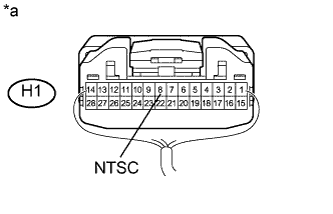

СИСТЕМА НАВИГАЦИИ (для моделей с жестким диском) > Сигнальная цепь дисплея между ЭБУ системы навигации и радиоприемником |
| 1.ПРОВЕРЬТЕ ЖГУТ ПРОВОДОВ И РАЗЪЕМ (РАДИОПРИЕМНИК – ДИСПЛЕЙ МОДУЛЯ СИСТЕМЫ НАВИГАЦИИ И ИНДИКАЦИИ) |
Отсоедините разъем H1 радиоприемника.
Отсоедините разъем H3 дисплея модуля системы навигации и индикации.
Измерьте сопротивление в соответствии со значениями, приведенными в таблице ниже.
| Контакты для подключения диагностического прибора | Режим | Заданные условия |
| H1-8 (NTSC) - H3-9 (VV+) | Всегда | Менее 1 Ом |
| H1-22 (GND) - H3-20 (VV-) | Всегда | Менее 1 Ом |
| H1-8 (NTSC) - масса | Всегда | 10 кОм или более |
| H1-22 (GND) - масса | Всегда | 10 кОм или более |
| H1-7 (SLD) - масса | Всегда | 10 кОм или более |
|
| ||||
| OK | |
| 2.ПРОВЕРЬТЕ РАДИОПРИЕМНИК В СБОРЕ |
|  |
С помощью осциллографа проверьте форму сигнала между каждым контактом и массой в соответствии с условиями, указанными в таблице.
| Контакты для подключения диагностического прибора | Условие | Заданные условия |
| H1-8 (NTSC) - масса | Радиоприемник осуществляет воспроизведение, изображение выводится | Сигнал на выходе синхронизирован с изображением |
| *a | Устройство с подсоединенным жгутом проводов (радиоприемник в сборе) |
|
| ||||
| OK | ||
| ||